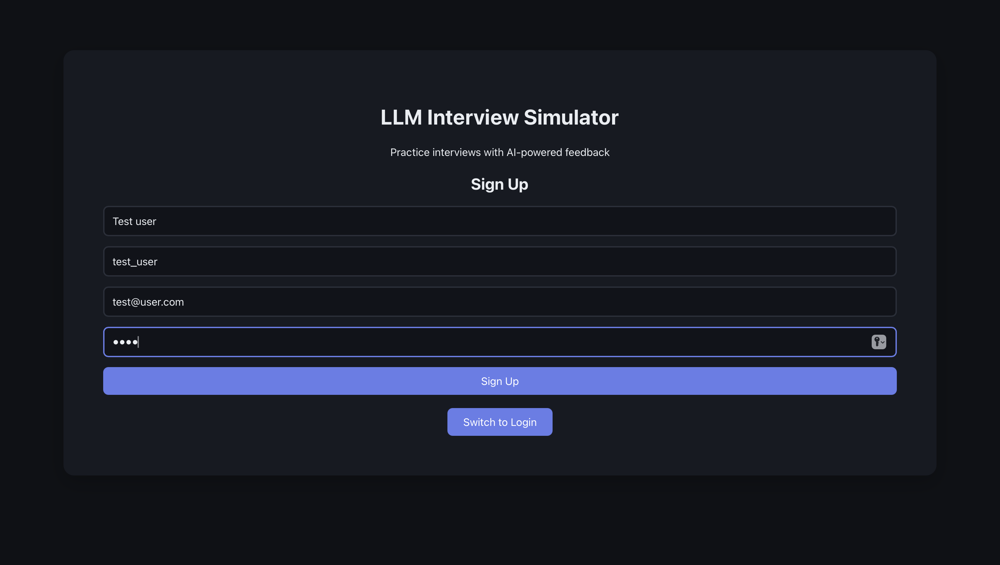
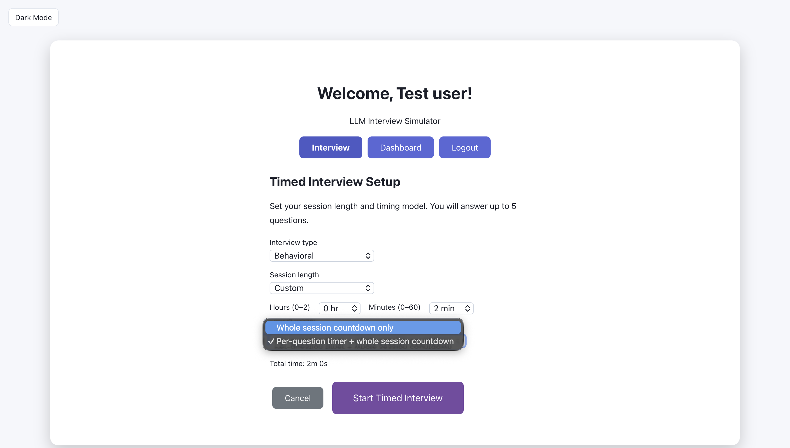

This page unfolds the capstone from early architecture through first design, problems encountered, pivots, updated system, testing, and results. Each theme includes artifacts (diagrams, screenshots, evolution) and technical reasoning to show how the work developed over the capstone.
Early Architecture
The system is split into a React frontend and a FastAPI backend. The frontend talks to the backend over REST; the backend uses AWS Bedrock for question generation and evaluation, and PostgreSQL (e.g., on AWS RDS) for users and interview sessions. Authentication is token-based (e.g., JWT) so the same API can serve the web app and future clients.
Artifact: System diagram

INSERT: One or two sentences describing your diagram—how the frontend, API, Bedrock, and database connect and why you chose this layout.
First Design and UX/UI
The user flow centers on login/signup, choosing role/company/difficulty and interview type, then a question–answer–feedback loop with optional follow-ups and session notes. The dashboard shows stats and history once enough sessions are completed.
Artifact: Setup screen

INSERT: Short narrative for this screenshot—what the viewer sees, how this screen fits into the flow, and any design decisions (e.g. why this layout, how you chose the options).
Artifact: Interview (question / answer / feedback)

INSERT: Short narrative for this screenshot—how the question, answer input, and feedback are presented and any UX choices (e.g. scoring, follow-ups).
Artifact: Dashboard

INSERT: Short narrative for this screenshot—what stats and history the user sees and how this supports their practice (e.g. strengths, areas to improve).
Database and API
The backend exposes endpoints for auth, interview (generate-question, evaluate, followup), sessions (create, list), and dashboard (stats, history). It uses Pydantic for request/response models and connects to Bedrock and the database.
Artifact: Key code or API design
INSERT: Paste a short snippet of key API design (e.g. endpoint list, Pydantic model, or route handler) or a code block. Example:
# INSERT: e.g. POST /api/interview/generate-question
# or a few lines of your FastAPI route or request/response modelINSERT: One or two sentences on how this API design supports the interview flow (e.g. why these endpoints, how auth or session handling works).
AI Prompts and Integration (Bedrock)
Question generation and answer evaluation are driven by an LLM via AWS Bedrock. Prompts are tailored by interview type, role, company, and difficulty so questions and feedback stay relevant.
Artifact: Prompts or evaluation logic
INSERT: Paste your question-generation or answer-evaluation prompt (or a shortened version) and/or a few lines of evaluation logic. Example:
# INSERT: e.g. "You are an interviewer. Generate one technical question for role X, difficulty Y..."
# or the structure of your evaluation (score + feedback criteria)INSERT: One or two sentences on how the prompts are tailored (e.g. by role, difficulty, interview type) and how evaluation produces a score and feedback.
Data Model and Persistence
User accounts and interview sessions (type, role, company, difficulty, question, answer, feedback, score, notes, timestamps) are stored in PostgreSQL. Migrations (e.g., Alembic) track schema changes such as adding role, company, difficulty, or strength_highlight.
Artifact: Data model or UML

INSERT: One or two sentences describing your data model—main entities (e.g. User, Session), key fields, and how sessions relate to users and store questions/answers/scores.
Pivots and Iteration
INSERT: Describe what changed during the capstone—e.g. a feature that didn’t work, feedback that led to a pivot, or an architecture change. Why you pivoted and what the result was.
Artifact: Before/after or evolution
INSERT: Add a before/after diagram, screenshot, or short code comparison, or describe the evolution in a few bullet points. Optional: add an image (e.g. images/pivot-before-after.png).
Testing and Quality
INSERT: How you tested the capstone (e.g. unit tests, API tests, manual UX testing) and any quality measures (e.g. test plan, coverage, or user feedback).
Artifact: Test results or coverage
INSERT: Paste a screenshot of test results or coverage report, or a short summary (e.g. “X tests for API, Y for frontend”). Optional: add image images/test-results.png.
Results and Future Plans
INSERT: Summarize outcomes (what works, what you delivered) and next steps—e.g. features you’d add, deployment plans, or how you’ll use this in your portfolio or LinkedIn.